Use Case Diagram
Use Case Diagram

ดู Mermaid source
flowchart LR
%% การตั้งค่า Class สีต่างๆ (กำหนด color:black ตามมาตรฐานเดิม)
classDef actorFill fill:#fff2cc,stroke:#d6b656,color:black
classDef ucFill fill:#dae8fc,stroke:#6c8ebf,color:black
classDef extFill fill:#f5f5f5,stroke:#666666,color:black
%% Actors Boundary (มีเฉพาะ human actors; ขั้นตอนอัตโนมัติใช้ <<include>>)
subgraph Actors [ผู้เกี่ยวข้อง / Actors]
User("General User<br>[Actor]")
Admin("Admin<br>[Actor]")
end
%% System Boundary
subgraph SystemBoundary [Scam Image Detection System]
direction TB
UC01("UC-01: เข้าสู่ระบบ / ยืนยันตัวตน<br>(Login & Authentication)")
UC02("UC-02: นำเข้ารูปภาพ<br>(Upload Image)")
UC03("UC-03: ประมวลผลภาพขั้นต้น<br>(Primary Analysis)")
UC04("UC-04: วิเคราะห์ด้วย AI<br>(AI Inference)")
UC05("UC-05: ตรวจสอบผลลัพธ์และแผนที่ความร้อน<br>(View Result & Heatmap)")
UC06("UC-06: รับการแจ้งเตือน<br>(Receive Notification; FCM = Phase 2)")
UC07("UC-07: จัดการประวัติการสแกน<br>(History Management)")
UC08("UC-08: รายงานและแชร์ผลลัพธ์<br>(Report & Share)")
UC09("UC-09: จัดการผู้ใช้และแดชบอร์ด<br>(Admin Dashboard & RBAC)")
UC10("UC-10: จัดการชุดข้อมูลและอัปเดตโมเดล<br>(Dataset & Model Management)")
end
%% External Services
subgraph ExternalServices [External Services]
GoogleVision("Google Vision API<br>[Reverse Search]")
FCM("Firebase Cloud Messaging<br>[FCM, Phase 2]")
end
%% Relationships / Associations
User --> UC01
User --> UC02
User --> UC05
User --> UC06
User --> UC07
User --> UC08
Admin --> UC01
Admin --> UC09
Admin --> UC10
%% ขั้นตอนอัตโนมัติเป็น <<include>> ใต้ General User (ไม่มี System Actor)
UC02 -. " <<include>> " .-> UC03
UC03 -. " <<include>> " .-> UC04
UC05 -. " <<include>> " .-> UC03
UC05 -. " <<include>> " .-> UC04
%% External Connections (optional; ล้มเหลวให้คืนผลบางส่วน ไม่สรุปว่าปลอดภัย)
UC03 --> GoogleVision
UC06 --> FCM
%% Apply Styles
class User,Admin actorFill
class UC01,UC02,UC03,UC04,UC05,UC06,UC07,UC08,UC09,UC10 ucFill
class GoogleVision,FCM extFill
คำอธิบายรายละเอียดกรณีการใช้งาน (Use Case Details)
-
UC-01: เข้าสู่ระบบ / ยืนยันตัวตน (Login & Authentication):
- ผู้เกี่ยวข้อง (Actors): General User, Admin
- รายละเอียด: กระบวนการยืนยันตัวตนเพื่อรักษาความปลอดภัยก่อนเข้าใช้งานระบบ โดยเข้าผ่าน Email/Password + JWT เพื่อทำการตรวจสอบและกำหนดสิทธิ์การดูข้อมูลตามบทบาท (Role-Based Access Control; Social Login / Google OAuth = Phase 2 deferred)
- ความต้องการทางระบบ (FR): FR-01 - ระบบเข้าสู่ระบบและยืนยันตัวตน (Authentication): ผู้ใช้และผู้ดูแลระบบเข้าสู่ระบบด้วย Email/Password + JWT (Social Login = Phase 2 deferred)
-
UC-02: นำเข้ารูปภาพ (Upload Image):
- ผู้เกี่ยวข้อง (Actors): General User
- รายละเอียด: ผู้ใช้งานสามารถอัปโหลดภาพที่ต้องการตรวจสอบ เช่น สลิปโอนเงิน หรือรูปโปรไฟล์บุคคลอื่น โดยเลือกรูปที่มีอยู่แล้วในคลังรูปภาพของอุปกรณ์เคลื่อนที่
- ความต้องการทางระบบ (FR): FR-02 - ระบบนำเข้ารูปภาพ (Image Input): ผู้ใช้เลือกรูปจากคลังภาพ แล้วอัปโหลดไฟล์ภาพเข้าสู่ระบบ
-
UC-03: ประมวลผลภาพขั้นต้น (Primary Analysis):
- ผู้เกี่ยวข้อง (Actors): General User (ผ่าน <
> จาก UC-02) - รายละเอียด: การดึงข้อมูลเมทาดาตา (Metadata/EXIF) ของภาพ, การสกัดตัวอักษรด้วยเทคนิค OCR เพื่อวิเคราะห์ Keyword อันตรายร่วมกับเทคนิค NLP และการส่งข้อมูลรูปภาพไปสืบค้นหาแหล่งที่มาดั้งเดิมด้วย Google Vision API
- ความต้องการทางระบบ (FR): FR-03 - ระบบวิเคราะห์ข้อมูลชั้นต้น (Primary Analysis): ระบบสามารถดึงข้อมูลแฝง (Metadata/EXIF), สกัดข้อความในภาพ (OCR), และค้นหาแหล่งที่มาของภาพ (Reverse Image Search) ได้โดยอัตโนมัติ
- ผู้เกี่ยวข้อง (Actors): General User (ผ่าน <
-
UC-04: วิเคราะห์ด้วย AI (AI Inference):
- ผู้เกี่ยวข้อง (Actors): General User (ผ่าน <
> จาก UC-03) - รายละเอียด: ส่งรูปภาพเพื่อนำเข้าโมเดลปัญญาประดิษฐ์เชิงลึก (Deep Learning) ในการตรวจสอบการแก้ไขระดับพิกเซล (Semantic Segmentation) เพื่อหาร่องรอยการตัดต่อ (Image Forgery) และตรวจสอบลักษณะว่าภาพถูกสังเคราะห์ด้วย Generative AI หรือไม่
- ความต้องการทางระบบ (FR): FR-04 - ระบบวิเคราะห์ด้วยปัญญาประดิษฐ์ (AI Inference): ระบบส่งภาพเข้าสู่โมเดล Deep Learning เพื่อตรวจสอบร่องรอยการตัดต่อ (Image Forgery/Semantic Segmentation) และตรวจสอบภาพที่สร้างด้วยปัญญาประดิษฐ์ (AI-Generated)
- ผู้เกี่ยวข้อง (Actors): General User (ผ่าน <
-
UC-05: ตรวจสอบผลลัพธ์และแผนที่ความร้อน (View Result & Heatmap):
- ผู้เกี่ยวข้อง (Actors): General User
- รายละเอียด: หน้าจอแสดงค่าคะแนนความเสี่ยงรวม (Overall Risk Score) พร้อมแสดงผลสรุปเหตุผลความผิดปกติ และแสดงแผนที่ความร้อน (Heatmap) บนจุดที่น่าสงสัยของภาพ เพื่อตอบโจทย์ความโปร่งใสของปัญญาประดิษฐ์ (XAI)
- ความต้องการทางระบบ (FR): FR-05 - ระบบแสดงผลลัพธ์ (Result & Visualization): ระบบคำนวณคะแนนความเสี่ยงรวม (Overall Risk Score) และสร้างแผนที่ความร้อน (Heatmap) เพื่ออธิบายผลลัพธ์ให้ผู้ใช้เข้าใจ
-
UC-06: รับการแจ้งเตือน (Receive Notification; FCM = Phase 2):
- ผู้เกี่ยวข้อง (Actors): General User
- รายละเอียด: การรับการแจ้งเตือนแบบ in-app/polling ภายใน 60 วินาทีเมื่อระบบตรวจสอบวิเคราะห์รูปภาพบนเซิร์ฟเวอร์เบื้องหลัง (Background Task) เสร็จสิ้นสมบูรณ์ (FCM push = Phase 2)
- ความต้องการทางระบบ (FR): FR-06 - ระบบแจ้งเตือน: v1 ใช้ polling + in-app notification ภายใน 60 วินาทีหลังงานเบื้องหลังเสร็จ (FCM push = Phase 2)
-
UC-07: จัดการประวัติการสแกน (History Management):
- ผู้เกี่ยวข้อง (Actors): General User
- รายละเอียด: ผู้ใช้งานทั่วไปสามารถเรียกดูประวัติรูปภาพและผลคะแนนความเสี่ยงย้อนหลังที่เคยส่งตรวจสอบ เพื่อเก็บบันทึกข้อมูลหรือเรียกดูใหม่ และผู้ใช้สามารถกดลบข้อมูลการสแกนประวัติตนเองได้ตามนโยบาย PDPA
- ความต้องการทางระบบ (FR): FR-07 - ระบบจัดการประวัติการสแกน (History Management): ระบบบันทึกประวัติการตรวจสอบภาพของผู้ใช้โดยสามารถเรียกดูผลลัพธ์ย้อนหลัง หรือลบประวัติได้
-
UC-08: รายงานและแชร์ผลลัพธ์ (Report & Share):
- ผู้เกี่ยวข้อง (Actors): General User
- รายละเอียด: การกดรายงาน (Report) ส่งยืนยันภาพหลอกลวงเข้าคลังสแกมเมอร์ส่วนกลางเพื่อเป็นประโยชน์ในอนาคต และสามารถกดแชร์ภาพสรุปความเสี่ยงหรือคำเตือนภัยไปยังสื่อโซเชียลภายนอก (เช่น LINE) เพื่อเตือนภัยบุคคลใกล้ชิด
- ความต้องการทางระบบ (FR): FR-08 - ระบบรายงานและแชร์ข้อมูล (Report & Share): ผู้ใช้สามารถกดรายงาน (Report) ภาพหลอกลวงเข้าสู่ฐานข้อมูลกลาง และสามารถแชร์ภาพผลลัพธ์/คำเตือนไปยังแอปพลิเคชันภายนอกได้
-
UC-09: จัดการผู้ใช้และแดชบอร์ด (Admin Dashboard & RBAC):
- ผู้เกี่ยวข้อง (Actors): Admin
- รายละเอียด: แอดมินเข้าใช้งานหน้าเว็บแผงควบคุมระบบ (Admin Panel) เพื่อติดตามกราฟสถิติการใช้งาน, จัดการข้อมูลของผู้ใช้งาน (เปลี่ยนสถานะเท่านั้น ห้าม hard-delete), ตรวจสอบสิทธิ์การเข้าถึง และการอนุมัติจัดการรายงานต่าง ๆ
- ความต้องการทางระบบ (FR): FR-09 - ระบบผู้ดูแลและการจัดการสิทธิ์ (Admin & RBAC): มีหน้าแดชบอร์ดให้ผู้ดูแลระบบตรวจสอบสถิติการใช้งาน, จัดการข้อมูลผู้ใช้, และกำหนดสิทธิ์การเข้าถึงระบบตามบทบาท
-
UC-10: จัดการชุดข้อมูลและอัปเดตโมเดล (Dataset & Model Management):
- ผู้เกี่ยวข้อง (Actors): Admin
- รายละเอียด: แอดมินทำหน้าที่ตรวจสอบรูปภาพสแกมที่ผู้ใช้รายงาน ตรวจจัดหมวดหมู่เพื่อส่งเข้าชุดข้อมูล (Scam Dataset) สำหรับนำไปเทรนและวิเคราะห์เพิ่มเติม พร้อมทำการอัปโหลดไฟล์น้ำหนักโมเดล (Model Weights) เวอร์ชันใหม่ขึ้นระบบ
- ความต้องการทางระบบ (FR): FR-10 - ระบบจัดการข้อมูลและโมเดล (Dataset & Model Management): ผู้ดูแลระบบสามารถตรวจสอบรูปภาพที่ถูกผู้ใช้รายงาน นำไปจัดหมวดหมู่ชุดข้อมูล และอัปโหลดโมเดล AI (Weights) เวอร์ชันใหม่เข้าสู่ระบบได้
Exception flows (ทุก UC)
- ไฟล์ผิดชนิด/เกินขนาด (FR-02) → ปฏิเสธพร้อมข้อความ ไม่บีบอัดใน v1
- OCR/โมเดล/External ล้มเหลว → คืนผลบางส่วนพร้อม confidence + สถานะชัดเจน
- Reverse search/FCM ไม่พร้อม → แจ้ง "ไม่มีข้อมูล" (optional) ไม่สรุปว่าภาพปลอดภัย
- Token หมดอายุ/สิทธิ์ไม่พอ → 401 + ต่ออายุหรือล็อกอินใหม่; ตรวจ ownership เสมอ